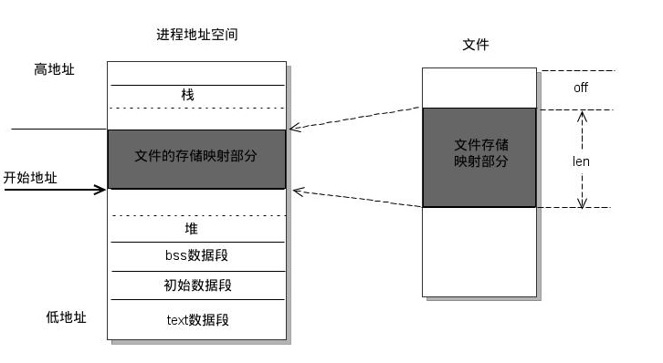
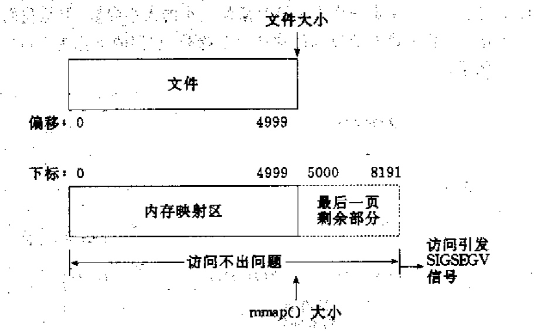
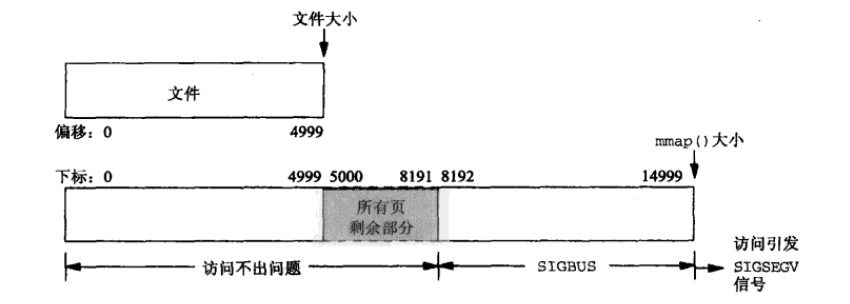

内存映射，简而言之就是将内核空间的一段内存区域映射到用户空间。映射成功后，用户对这段内存区域的修改可以直接反映到内核空间，相反，内核空间对这段区域的修改也直接反映用户空间。那么对于内核空间与用户空间两者之间需要大量数据传输等操作的话效率是非常高的。当然，也可以将内核空间的一段内存区域同时映射到多个进程，这样还可以实现进程间的共享内存通信。
mmap将一个文件或者其它对象映射进内存。文件被映射到多个页上，如果文件的大小不是所有页的大小之和，最后一个页不被使用的空间将会清零。munmap执行相反的操作，删除特定地址区域的对象映射。
当使用mmap映射文件到进程后，就可以直接操作这段虚拟地址进行文件的读写等操作，不必再调用read，write等系统调用。但需注意，直接对该段内存写时不会写入超过当前文件大小的内容。
采用共享内存通信的一个显而易见的好处是效率高，因为进程可以直接读写内存，而不需要任何数据的拷贝。对于像管道和消息队列等通信方式，则需要在内核和用户空间进行四次的数据拷贝，而共享内存则只拷贝两次数据：一次从输入文件到共享内存区，另一次从共享内存区到输出文件。实际上，进程之间在共享内存时，并不总是读写少量数据后就解除映射，有新的通信时，再重新建立共享内存区域。而是保持共享区域，直到通信完毕为止，这样，数据内容一直保存在共享内存中，并没有写回文件。共享内存中的内容往往是在解除映射时才写回文件的。因此，采用共享内存的通信方式效率是非常高的。
通常使用mmap()的三种情况： 提高I/O效率、匿名内存映射、共享内存进程通信 。

由上图可以看出，进程的虚拟地址空间，由多个虚拟内存区域构成。虚拟内存区域是进程的虚拟地址空间中的一个同质区间，即具有同样特性的连续地址范围。上图中所示的text数据段（代码段）、初始数据段、BSS数据段、堆、栈和内存映射，都是一个独立的虚拟内存区域。而为内存映射服务的地址空间处在堆栈之间的空余部分。
linux 内核使用vm_area_struct结构来表示一个独立的虚拟内存区域，由于每个不同质的虚拟内存区域功能和内部机制都不同，因此一个进程使用多个vm_area_struct结构来分别表示不同类型的虚拟内存区域。各个vm_area_struct结构使用链表或者树形结构链接，方便进程快速访问，如下图所示：
vm_area_struct结构中包含区域起始和终止地址以及其他相关信息，同时也包含一个vm_ops指针，其内部可引出所有针对这个区域可以使用的系统调用函数。这样，进程对某一虚拟内存区域的任何操作需要用要的信息，都可以从vm_area_struct中获得。mmap函数就是要创建一个新的vm_area_struct结构，并将其与文件的物理磁盘地址相连。具体步骤请看下一节。
X Window服务器
众多内存数据库如MongoDB操作数据,就是把文件磁盘内容映射到内存中进行处理,为什么会提高效率? 很多人不解. 下面就深入分析内存文件映射.
通过malloc来分配大内存其实调用的是mmap，可见在malloc(10)的时候调用的是brk, malloc(10 * 1024 * 1024)调用的是mmap;
使用普通文件提供的内存映射：适用于任何进程之间；此时，需要打开或创建一个文件，然后再调用mmap()
使用特殊文件提供匿名内存映射：适用于具有亲缘关系的进程之间；由于父子进程特殊的亲缘关系，在父进程中先调用mmap()，然后调用fork()。那么在调用fork()之后，子进程继承父进程匿名映射后的地址空间，同样也继承mmap()返回的地址，这样，父子进程就可以通过映射区域进行通信了。注意，这里不是一般的继承关系。一般来说，子进程单独维护从父进程继承下来的一些变量。而mmap()返回的地址，却由父子进程共同维护。 对于具有亲缘关系的进程实现共享内存最好的方式应该是采用匿名内存映射的方式。此时，不必指定具体的文件，只要设置相应的标志即可.
mmap内存映射的实现过程，总的来说可以分为三个阶段：
1、进程在用户空间调用库函数mmap，原型：void *mmap(void *start, size_t length, int prot, int flags, int fd, off_t offset);
2、在当前进程的虚拟地址空间中，寻找一段空闲的满足要求的连续的虚拟地址
3、为此虚拟区分配一个vm_area_struct结构，接着对这个结构的各个域进行了初始化
4、将新建的虚拟区结构（vm_area_struct）插入进程的虚拟地址区域链表或树中
5、为映射分配了新的虚拟地址区域后，通过待映射的文件指针，在文件描述符表中找到对应的文件描述符，通过文件描述符，链接到内核“已打开文件集”中该文件的文件结构体（struct file），每个文件结构体维护着和这个已打开文件相关各项信息。
6、通过该文件的文件结构体，链接到file_operations模块，调用内核函数mmap，其原型为：int mmap(struct file *filp, struct vm_area_struct *vma)，不同于用户空间库函数。
7、内核mmap函数通过虚拟文件系统inode模块定位到文件磁盘物理地址。
8、通过remap_pfn_range函数建立页表，即实现了文件地址和虚拟地址区域的映射关系。此时，这片虚拟地址并没有任何数据关联到主存中。
注：前两个阶段仅在于创建虚拟区间并完成地址映射，但是并没有将任何文件数据的拷贝至主存。真正的文件读取是当进程发起读或写操作时。
9、进程的读或写操作访问虚拟地址空间这一段映射地址，通过查询页表，发现这一段地址并不在物理页面上。因为目前只建立了地址映射，真正的硬盘数据还没有拷贝到内存中，因此引发缺页异常。
10、缺页异常进行一系列判断，确定无非法操作后，内核发起请求调页过程。
11、调页过程先在交换缓存空间（swap cache）中寻找需要访问的内存页，如果没有则调用nopage函数把所缺的页从磁盘装入到主存中。
12、之后进程即可对这片主存进行读或者写的操作，如果写操作改变了其内容，一定时间后系统会自动回写脏页面到对应磁盘地址，也即完成了写入到文件的过程。
注：修改过的脏页面并不会立即更新回文件中，而是有一段时间的延迟，可以调用msync()来强制同步, 这样所写的内容就能立即保存到文件里了。
我们首先简单的回顾一下常规文件系统操作（调用read/fread等类函数）中，函数的调用过程：
1、进程发起读文件请求。
2、内核通过查找进程文件符表，定位到内核已打开文件集上的文件信息，从而找到此文件的inode。
3、inode在address_space上查找要请求的文件页是否已经缓存在页缓存中。如果存在，则直接返回这片文件页的内容。
4、如果不存在，则通过inode定位到文件磁盘地址，将数据从磁盘复制到页缓存。之后再次发起读页面过程，进而将页缓存中的数据发给用户进程。
总结来说，常规文件操作为了提高读写效率和保护磁盘，使用了页缓存机制。这样造成读文件时需要先将文件页从磁盘拷贝到页缓存中，由于页缓存处在内核空间，不能被用户进程直接寻址，所以还需要将页缓存中数据页再次拷贝到内存对应的用户空间中。这样，通过了两次数据拷贝过程，才能完成进程对文件内容的获取任务。写操作也是一样，待写入的buffer在内核空间不能直接访问，必须要先拷贝至内核空间对应的主存，再写回磁盘中（延迟写回），也是需要两次数据拷贝。
而使用mmap操作文件中，创建新的虚拟内存区域和建立文件磁盘地址和虚拟内存区域映射这两步，没有任何文件拷贝操作。而之后访问数据时发现内存中并无数据而发起的缺页异常过程，可以通过已经建立好的映射关系，只使用一次数据拷贝，就从磁盘中将数据传入内存的用户空间中，供进程使用。
总而言之，常规文件操作需要从磁盘到页缓存再到用户主存的两次数据拷贝。而mmap操控文件，只需要从磁盘到用户主存的一次数据拷贝过程。说白了，mmap的关键点是实现了用户空间和内核空间的数据直接交互而省去了空间不同数据不通的繁琐过程。因此mmap效率更高。
由上文讨论可知，mmap优点共有一下几点：
1、对文件的读取操作跨过了页缓存，减少了数据的拷贝次数，用内存读写取代I/O读写，提高了文件读取效率。
2、实现了用户空间和内核空间的高效交互方式。两空间的各自修改操作可以直接反映在映射的区域内，从而被对方空间及时捕捉。
3、提供进程间共享内存及相互通信的方式。不管是父子进程还是无亲缘关系的进程，都可以将自身用户空间映射到同一个文件或匿名映射到同一片区域。从而通过各自对映射区域的改动，达到进程间通信和进程间共享的目的。同时，如果进程A和进程B都映射了区域C，当A第一次读取C时通过缺页从磁盘复制文件页到内存中；但当B再读C的相同页面时，虽然也会产生缺页异常，但是不再需要从磁盘中复制文件过来，而可直接使用已经保存在内存中的文件数据。
4、可用于实现高效的大规模数据传输。内存空间不足，是制约大数据操作的一个方面，解决方案往往是借助硬盘空间协助操作，补充内存的不足。但是进一步会造成大量的文件I/O操作，极大影响效率。这个问题可以通过mmap映射很好的解决。换句话说，但凡是需要用磁盘空间代替内存的时候，mmap都可以发挥其功效。
函数原型
void *mmap(void *start, size_t length, int prot, int flags, int fd, off_t offset);
成功执行时，mmap()返回被映射区的指针。失败时，mmap()返回MAP_FAILED[其值为(void *)-1]， error被设为以下的某个值：
1 EACCES：访问出错
2 EAGAIN：文件已被锁定，或者太多的内存已被锁定
3 EBADF：fd不是有效的文件描述词
4 EINVAL：一个或者多个参数无效
5 ENFILE：已达到系统对打开文件的限制
6 ENODEV：指定文件所在的文件系统不支持内存映射
7 ENOMEM：内存不足，或者进程已超出最大内存映射数量
8 EPERM：权能不足，操作不允许
9 ETXTBSY：已写的方式打开文件，同时指定MAP_DENYWRITE标志
10 SIGSEGV：试着向只读区写入
11 SIGBUS：试着访问不属于进程的内存区
参数
start：映射区的开始地址
length：映射区的长度
prot：期望的内存保护标志，不能与文件的打开模式冲突。是以下的某个值，可以通过or运算合理地组合在一起
1 PROT_EXEC ：页内容可以被执行
2 PROT_READ ：页内容可以被读取
3 PROT_WRITE ：页可以被写入
4 PROT_NONE ：页不可访问
flags：指定映射对象的类型，映射选项和映射页是否可以共享。它的值可以是一个或者多个以下位的组合体
1 MAP_FIXED //使用指定的映射起始地址，如果由start和len参数指定的内存区重叠于现存的映射空间，重叠部分将会被丢弃。如果指定的起始地址不可用，操作将会失败。并且起始地址必须落在页的边界上。
2 MAP_SHARED //与其它所有映射这个对象的进程共享映射空间。对共享区的写入，相当于输出到文件。直到msync()或者munmap()被调用，文件实际上不会被更新。
3 MAP_PRIVATE //建立一个写入时拷贝的私有映射。内存区域的写入不会影响到原文件。这个标志和以上标志是互斥的，只能使用其中一个。
4 MAP_DENYWRITE //这个标志被忽略。
5 MAP_EXECUTABLE //同上
6 MAP_NORESERVE //不要为这个映射保留交换空间。当交换空间被保留，对映射区修改的可能会得到保证。当交换空间不被保留，同时内存不足，对映射区的修改会引起段违例信号。
7 MAP_LOCKED //锁定映射区的页面，从而防止页面被交换出内存。
8 MAP_GROWSDOWN //用于堆栈，告诉内核VM系统，映射区可以向下扩展。
9 MAP_ANONYMOUS //匿名映射，映射区不与任何文件关联。
10 MAP_ANON //MAP_ANONYMOUS的别称，不再被使用。
11 MAP_FILE //兼容标志，被忽略。
12 MAP_32BIT //将映射区放在进程地址空间的低2GB，MAP_FIXED指定时会被忽略。当前这个标志只在x86-64平台上得到支持。
13 MAP_POPULATE //为文件映射通过预读的方式准备好页表。随后对映射区的访问不会被页违例阻塞。
14 MAP_NONBLOCK //仅和MAP_POPULATE一起使用时才有意义。不执行预读，只为已存在于内存中的页面建立页表入口。
fd：有效的文件描述词。如果MAP_ANONYMOUS被设定，为了兼容问题，其值应为-1
offset：被映射对象内容的起点
int munmap( void * addr, size_t len )
成功执行时，munmap()返回0。失败时，munmap返回-1，error返回标志和mmap一致；
int msync( void *addr, size_t len, int flags )
一般说来，进程在映射空间的对共享内容的改变并不直接写回到磁盘文件中，往往在调用munmap（）后才执行该操作。
可以通过调用msync()实现磁盘上文件内容与共享内存区的内容一致。
1、使用mmap需要注意的一个关键点是，mmap映射区域大小必须是物理页大小(page_size)的整倍数（32位系统中通常是4k字节）。原因是，内存的最小粒度是页，而进程虚拟地址空间和内存的映射也是以页为单位。为了匹配内存的操作，mmap从磁盘到虚拟地址空间的映射也必须是页。
2、内核可以跟踪被内存映射的底层对象（文件）的大小，进程可以合法的访问在当前文件大小以内又在内存映射区以内的那些字节。也就是说，如果文件的大小一直在扩张，只要在映射区域范围内的数据，进程都可以合法得到，这和映射建立时文件的大小无关。具体情形参见“情形三”。
3、映射建立之后，即使文件关闭，映射依然存在。因为映射的是磁盘的地址，不是文件本身，和文件句柄无关。同时可用于进程间通信的有效地址空间不完全受限于被映射文件的大小，因为是按页映射。
在上面的知识前提下，我们下面看看如果大小不是页的整倍数的具体情况：
分析：因为单位物理页面的大小是4096字节，虽然被映射的文件只有5000字节，但是对应到进程虚拟地址区域的大小需要满足整页大小，因此mmap函数执行后，实际映射到虚拟内存区域8192个 字节，5000~8191的字节部分用零填充。映射后的对应关系如下图所示：
此时：
（1）读/写前5000个字节（0~4999），会返回操作文件内容。
分析：由于文件的大小是5000字节，和情形一一样，其对应的两个物理页。那么这两个物理页都是合法可以读写的，只是超出5000的部分不会体现在原文件中。由于程序要求映射15000字节，而文件只占两个物理页，因此8192字节~15000字节都不能读写，操作时会返回异常。如下图所示：
此时：
（1）进程可以正常读/写被映射的前5000字节(0~4999)，写操作的改动会在一定时间后反映在原文件中。
分析：如果在映射建立之初，就对文件进行读写操作，由于文件大小为0，并没有合法的物理页对应，如同情形二一样，会返回SIGBUS错误。
但是如果，每次操作ptr读写前，先增加文件的大小，那么ptr在文件大小内部的操作就是合法的。例如，文件扩充4096字节，ptr就能操作ptr ~ [ (char)ptr + 4095]的空间。只要文件扩充的范围在1000个物理页（映射范围）内，ptr都可以对应操作相同的大小。
这样，方便随时扩充文件空间，随时写入文件，不造成空间浪费。